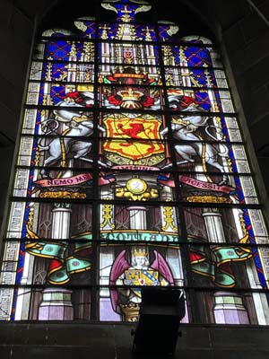
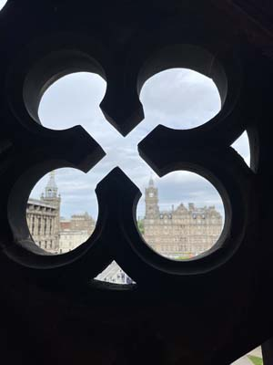

Entering under a pseudonym, the design of self-taught architect George Meikle Kemp won by poplular vote. Construction began in 1840. Unfortunately, due to the dust from the stones, many of the masons died from working on the project. George Kemp himself also died before the project was completed, and the monument was brought to commpletion by his son.
 